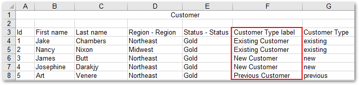
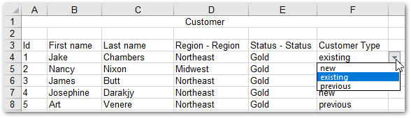
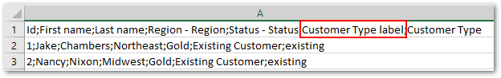
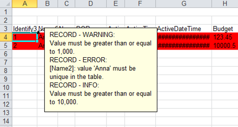
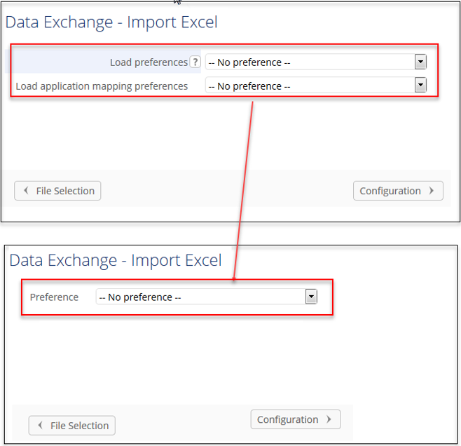
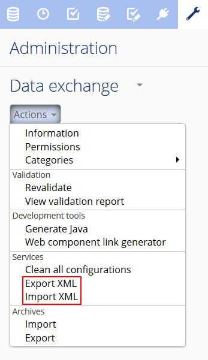
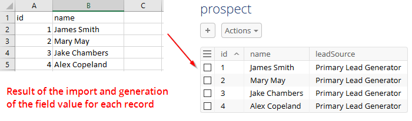
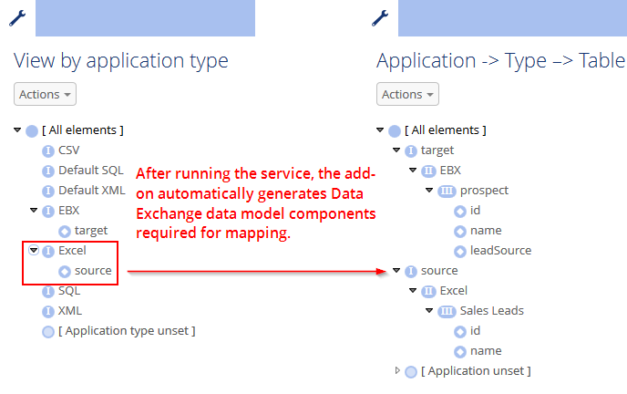
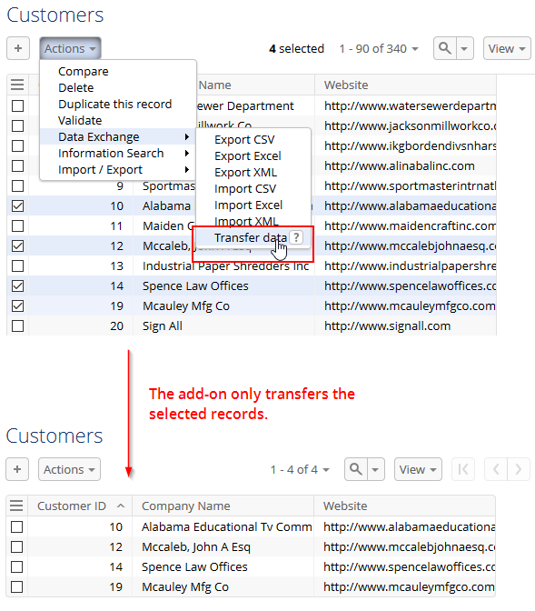

Released: July 2021
This release includes an updated trademark.
This release includes no updated functionality.
This release includes no closed issues.
This release contains the following known issues:
Association object and selection node are not supported.
Data lineage.
Graphical view of the data mapping configurations.
Split of string transformation function is not supported for a multi-valued string field.
Data transfer between complex terminal nodes is possible only if they use the same Java Bean.
You can not export data from multiple complex nodes in EBX® that when there is at least one complex node with multiple occurrences.
You can not import data from multiple complex nodes in an XML file when there is at least one complex node with multiple occurrences.
Split of data works for terminal nodes only.
SQL export:
You can only export data from EBX® to the selected columns in the same tables of a view which is joined by multiple tables.
The add-on doesn't support exporting SQL with the Replace all content mode to a view which is joined by multiple tables.
Checking mandatory fields of a view in SQL database is not supported.
The export still executes normally and shows an error message from database when no privilege granted.
Exporting data from multi-valued fields and multi-valued groups is not supported.
You can not export data from EBX® to a view in PostgreSQL database.
Exporting data from EBX® to an auto-increment column in SQL Server is not supported because the IDENTITY_INSERT property is always set to OFF.
SQL import:
Checking privileges for a view in PostgreSQL is not supported.
Dynamic data modeling:
Foreign key statements in the DDL file are not managed.
Released: June 2021
A warning is now provided when discrepancies exist between preference settings and an import's source file.
This release includes the following bug fixes:
[ADIX-3420] An error prevents the Generate from file service from being executed when generating a model using the Excel 2007 option.
[ADIX-3421] Users cannot select an export preference after creating an existing preference during a Excel/CSV file export operation.
[ADIX-3422] The defined column name of foreign key fields is not displayed after exporting a CSV file.
[ADIX-3424] The string to decimal number conversion transformation does not work.
[ADIX-3425] [Transfer] The result screen displays incorrect information when transferring data from many tables to one table in the same data model.
[ADIX-3426] Formula values cannot be imported.
[ADIX-3427] Java classes of drivers always get loaded without checking first.
[ADIX-3428] The Data file sample displays incorrectly when importing a CSV file into a table.
[ADIX-3429] When using the split transformation function to export CSV, a redundant separator character is included in the exported file.
[ADIX-3430] On a record that contains separator characters, enumeration labels are not enclosed by delimiters (double quotes).
[ADIX-3431] The data of a multi-valued field which contains a separator character is not enclosed by double quotes after being exported to CSV.
[ADIX-3432] Importing Excel ignores boolean values in the XLS file.
[ADIX-3433] The Concatenate strings, Aggregate of integer numbers, and Aggregate of decimal numbers transformation functions do not work on multiple value fields when executing Export Excel or CSV.
[ADIX-3435] When exporting Excel, data is exported under the wrong column on a table that has a list group with a Foreign key field.
[ADIX-3436] A redundant button displays in the Data file sample screen when importing a CSV file.
[ADIX-3437] An incorrect message displays when exporting Excel (2003, 2007) with no header.
[ADIX-3438] The Data file sample displays incorrectly when importing a CSV file.
[ADIX-3441] The exported Excel and CSV files always display the old name field instead of the new one.
Released: March 2021
This release includes the following updates:
This version of the add-on has been updated to ensure compatibility with the TIBCO EBX® 6.0.0 GA release.
Data export and transfer operations were adapted to ensure consistent results. As an example, in previous versions, data might get modified by another user before the operation completed. This would result in the exported or transferred data containing the modifications. This is no longer the case. The data will be in the same state as when the operation was initiated.
When importing, an error message now displays to prevent the incorrect configuration of line return or separator characters.
When importing or exporting using the Excel format, the add-on now defaults to the Excel 2007 option.
The readability was improved for validation error messages that display during data transfer. The messages now display the label of the record they refer to, which can help you locate and fix the issue.
You can now define multiple SQL connections for the same data model.
The cross reference feature was optimized.
Depending on your deployment environment's resources, you might have issues using the Insert only mode when importing a large volume of data. If this issue occurs, use any of the other import modes. Additionally, the results screen will not display the number of updated and unchanged records when using this import mode.
The Disable write access lock option was removed from the add-on. The corresponding APIs were deprecated and calling the any of the following will result in an UnsupportedOperationException being thrown:
ExportConfigurationSpec interface.
FileExportConfigurationSpec, SQLExportConfigurationSpec and DataExchangeExportSpec classes.
Updates to import modes:
Update or insert: the results screen will not display the number of updated and unchanged records when using this import mode.
Use of the Insert only mode is not recommended when importing a large volume of data.
This release includes the following bug fixes:
[ADIX-3110] An Excel/CSV import operation cannot be executed if the complex foreign key field contains special characters.
[ADIX-3117] Transformation function parameters are lost after duplicating it.
[ADIX-3121] [All browsers] The No mode of the Disable write access log field is not aligned with others on the Configuration screen when exporting XML.
[ADIX-3123] An incorrect import result displays when importing an Excel file with the import type as Import sheets sequentially after running a Simulation.
[ADIX-3128] An error occurs at the second time when exporting CSV/Excel on workflow and using an invalid preference.
[ADIX-3130] Newly mapped fields are not exported after exporting an Excel file using a preference created from the add-on configuration settings.
[ADIX-3131] Users can set export Foreign/Primary key with permalink and without Export label on the add-on configuration settings.
[ADIX-3134] The Undefined value is displayed on the User profile field and an exception occurs in the log file if the Owner is not defined on the Application interface preference record.
[ADIX-3135] The table name is incorrect when generating a model using a CSV file.
[ADIX-3136] An incorrect error occurs when importing CSV using the preference and navigating to the Mapping column screen.
[ADIX-3140] Table mappings display incorrectly after removing a table path from the preference when importing Excel at the dataset level.
[ADIX-3142] Services created in the EBX displays incorrectly in the exported Excel file after exporting permissions.
[ADIX-3150] An Excel file cannot be imported at the dataset level after clicking on the Table mapping/Column mapping link.
[ADIX-3152] The Disable write access lock field displays twice in the Configuration screen after defining global permissions in an Excel/CSV export operation.
[ADIX-3161] A JavaScript error occurs after pressing Import/Export SQL with no field mapping.
[ADIX-3164] The error message "Service not available for the content" displays when exporting an XML file at the dataset level after accessing a table of this dataset.
[ADIX-3173] A redundant button is displayed on the File and Preference selection screen when running the Import Excel/CSV service after setting permission.
[ADIX-3214] A redundant text is displayed on the Configuration screen when running the Export XML service after setting permissions.
[ADIX-3219] An exception occurs during CSV import when the previous CSV import operation was interrupted.
[ADIX-3230] The foreign key field is still mapped in the Mapping column screen when exporting/importing CSV/Excel using the created preference from the add-on configuration.
[ADIX-3242] A Javascript error occurs when clicking on the Preview button of data file sample in Excel import operation at the dataset level.
[ADIX-3247] Parameter of the Constant value transformation function is changed after updating a preference in Excel/CSV export operation.
[ADIX-3252] The data sample is displayed incorrectly when importing a CSV file into a table if the data contains more than one separator character.
[ADIX-3256] The Disable write access lock field can be modified in the Configuration screen although the global permission is "read-only" in an XML export operation.
[ADIX-3257] The target field and target table in the warning message are wrong after exporting/importing Excel/CSV using a transformation function that contains an invalid parameter.
[ADIX-3273] A deadlock occurs when the Excel/CSV export includes related data.
[ADIX-3293] All selected records are not exported successfully when exporting Excel or CSV and the Export related data mode is enabled.
[ADIX-3320] An unexpected error occurs after deleting the Mode field in the Date time pattern table.
[ADIX-3352] A CSV file cannot be imported into a table after stopping the simulation process.
Released: February 2021
[ADIX-3370] The import results are not correct when using the Import CSV service.
Released: January 2021
The add-on no longer supports the Document Type Definition declaration in XML files. If this causes an exception, the add-on will inform you that this declaration is not allowed.
[ADIX-3334] An unexpected exception occurs when selecting the Import XML service.
Release Date: October 20, 2020
This release includes the following bug fixes:
[ADIX-2938] A deadlock occurs when an Excel or CSV export includes related data.
[ADIX-3006] A blocking screen displays during a CSV import operation if the separator and delimiter are different from the imported file.
[ADIX-3195] An unexpected exception occurs while exporting a subset of columns to CSV or Excel.
Release Date: September 18, 2020
This release contains the following updates:
Support has been updated for the JDK11 library.
The JQuery library was updated to version 3.5.0.
The Apache POI library was updated to version 4.1.2.
[ADIX-3308] An invalid Excel file is displayed incorrectly after being imported using the Download file of invalid data mode.
Release Date: June 23, 2020
This release includes the following updates:
Data in hidden fields in the DaqaMetaData group can now be transferred.
The steps in the API documentation that describe how to create an SQL field mapper for import and export were updated.
Support has been updated for the JDK8 and JDK11 libraries. Additionally, the log4j library version 1.2.17 was removed.
This release includes the following bug fixes:
[ADIX-3216] An error message is not shown when trying to export more records than Excel can handle.
[ADIX-3221] Excel import and export fails to export a table with one million records.
[ADIX-3224] The progress value is not displayed on the progress bar when exporting CSV or Excel.
Release Date: April 20, 2020
This release includes the following updates:
The add-on now includes the progress of import operations in its log.
Performance has been improved when importing from a CSV file.
This release includes the following bug fixes:
[ADIX-188] A validation operation on the add-on's Field table does not catch errors.
[ADIX-219] Import from a spreadsheet fails when a sheet's name includes a space at the end.
[ADIX-225] When importing CSV or Excel, the current preference cannot be removed after navigating to the previous step from the Simulation screen.
[ADIX-1428] A field with default view defined as hidden should not be exported.
[ADIX-2119] The Import button does not perform the default submit action.
[ADIX-2849] When importing or exporting Excel or CSV, a transformation function is not created when creating a new preference based on an existing preference.
[ADIX-2960] Add-on services do not return users to the correct location.
[ADIX-2980] Data transfer operations do not complete.
[ADIX-2997] A transformation function is removed after updating a preference.
[ADIX-2998] Newly added table columns are not available to map in existing preferences.
[ADIX-3002] An exception occurs when importing Excel at the dataset level and updating or creating a preference.
[ADIX-3005] The preference is not updated after modifying the mapping column under a multi-valued group during an Excel import operation.
[ADIX-3050] When importing or exporting using a preference, selecting the Remove current preference label does not select its checkbox.
[ADIX-3126] The add-on's performance was slow when importing a CSV file.
[ADIX-3129] A field cannot be mapped if it is both a primary key and foreign key and its permission is set to Read-only.
[ADIX-3141] Groups that contain an association do not display when mapping.
[ADIX-3159] A NullPointerException occurs while exporting a dataset's permissions.
Release Date: December 10, 2019
When using the Validate imported records only option, the add-on only validates records included in the import. This update can improve performance as previously the entire table was validated and results were filtered to only show those related to imported records.
This release includes the following bug fixes:
[ADIX-3014] The validation message cannot be seen in the comment of an Excel 2007 file after exporting using the Include validation messages mode.
[ADIX-3071] Data is exported to the wrong column when using the option to export foreign key labels.
Release Date: November 8, 2019
The new features and updates for this release are described below:
This release contains the following updates and enhancements:
For Excel and CSV, the Update and insert import mode has been renamed to Update or insert.
Administrators can now use permission settings to determine access rights to import, export, and transfer screens. Additionally, they can specify the type of import modes accessible to users. For example, they could set permissions so that a profile can only access the Update or insert option and not the Replace all option.
The add-on now offers fine-grained control over how configuration and preference data can be imported and exported. When importing, administrators can now choose the scope of configuration data to import, as well as specify that only preference data from a specific profile gets imported.
The new Export preference service allows export of configuration data related to selected preferences. The service is accessible from the Application interface preference table.
If a user has made adjustments to import settings and not saved a preference, a prompt now displays to inform them that they can save settings as a preference.
Dataset permissions data can now be exported to an Excel file.
API updates included in this release provide the:
methods to get a PrimaryKey set that identifies records in the Application interface preference table. See ApplicationInterfaceConfigurationFactory in the Java API documentation for more information.
methods to export the records in the Application interface preference table and the related data from other tables to an XML file. See ExportDataExchangeConfigurationSpec in the Java API documentation for more information.
methods to import add-on configuration data from an XML file based on the specified preference owner and import scope. See ImportDataExchangeConfigurationSpec and ImportScope in the Java API documentation for more information.
context to get the com.orchestranetworks.addon.dex.DataExchangeSpec from the configuration declared in the add-on's dataset. See DataExchangeHelper, DataExchangeHelperContext, CSVExportDataExchangeHelperContext, CSVImportDataExchangeHelperContext, SpreadsheetExportDataExchangeHelperContext and SpreadsheetImportDataExchangeHelperContext in the Java API documentation for more information.
This release includes the following bug fixes:
[ADIX-2745] Associations under a group still get handled while exporting Excel.
[ADIX-2752] Remove error messages regarding new records cannot be imported when importing data with the "Update only"/"Insert only" mode.
[ADIX-2754] Missing error message on import result screen.
[ADIX-2901] Nested groups are exported improperly under XML format.
[ADIX-2955] When re-importing from CSV using a preference where the separator is a single quote character and the delimiter a double quote, the separator is not imported correctly.
[ADIX-3017] An unexpected exception occurs while exporting data under Excel format.
Release Date: September 3, 2019
This release contains the following updates and enhancements:
During the simulation phase of Excel and CSV import you can now:
Use the Validate imported records only option to specify whether the validation report runs only on imported records, or also includes all records in the target table.
Skip the detailed validation report.
For Excel import and export, multi-valued complex fields are now supported.
During CSV export, when an exported field includes the same character used as a separator, the add-on now automatically uses double quotes as escape characters to ensure data integrity.
The option to specify whether the handleNewContext() method executes on import or transfer is now available. The new Allow transient record context management property can be accessed from the Administration > Integration > TIBCO EBX® Data Exchange Add-on > Additional configuration > Import preference table.
This release includes the following bug fixes:
[ADIX-367] Preference does not get an updated starting position when importing Excel.
[ADIX-2896] Columns can be missing or exported in an incorrect order when exporting from a custom table view.
[ADIX-2898] The simulation progress bar should display the status when getting the validation report.
[ADIX-2972] When re-importing from CSV using a preference where the separator is a single quote character and the delimiter a double quote, the separator is not imported correctly.
Release Date: June 20, 2019
This release contains the following updates and enhancements:
When exporting Excel using preferences, you now have the option of adding or removing tables in the main configuration screen.
For Excel export, the Preference field is now located at the top of the main configuration screen.
Export of fields that are enumerations has been enhanced. See the section below for more details.
An API to return a CommonApplication using the application's Universal Name is now available.
After selecting a preference, the Export and Mapping buttons are now displayed. This allows an export to be performed without having to navigate through each screen.
The add-on allows you to include enumerations in CSV and Excel exports of tables, or individual records. The following describes behavior for each supported export type:
Excel export: On the main configuration page, the add-on presents you with the following options under Export enumerations:
Export label: The export includes an additional column for the enumeration field's label.

Export static enumerations: The enumeration column will contain a drop-down list of enumeration values defined in the data model.

When you select both options, the exported columns both have drop-down lists of their available values.
If you leave both options unchecked, the exported column includes only the enumeration value defined in the data model.
CSV export: The exported file will include a dedicated column with the enumeration value's labels.

This release includes the following bug fixes:
[ADIX-2677] When exporting CSV, static enumerations on integer fields are not properly exported.
[ADIX-2680] An unexpected exception occurs when importing Excel.
[ADIX-2682] A NullPointerException occurs when starting EBX®.
Release Date: January 18, 2019
This release contains the following updates and enhancements:
As part of an effort to improve overall user experience, the file and preference selection pages have been combined for Excel and CSV import.
Dynamic Data Modeling services can now be invoked via the API.
This release includes the following bug fixes:
[ADIX-573] A temporary exported file is created when there are no records to export via the API.
[ADIX-2663] An error occurs when using a constant transformation to transfer data on a primary key field with no source field.
Release Date: December 14, 2018
This release contains the following updates and enhancements:
The add-on can now automatically handle line break characters when importing and exporting.
The add-on no longer displays warning messages pertaining to write permission for hidden or read-only fields, associations, and selection nodes.
The option to export ignored fields as blank columns now defaults to No.
This release includes the following bug fixes:
[36460] Service labels are duplicated in workflows.
[36461] Transformation functions do not get applied on foreign key fields when using a preference.
[36462] Errors are logged at the debug level.
[36463] When importing Excel at the dataset level, nothing happens when selecting the Import button.
[36720] When importing or exporting Excel/CSV, an exception is raised in the log when loading the Extensions drop-down list.
Release Date: October 26, 2018
The EBX® Data Exchange Add-on has undergone significant updates to ensure compatibility with the EBX® 5.9.0 GA release.
This release includes the following bug fixes:
[33698] An incorrect result is returned when importing a string that contains only numbers and starts with zero.
[35697] An unexpected error occurs when creating a new preference during an Excel import operation.
[36030] A javascript error occurs when exporting an empty XML file.
[36041] The add-on crashes when exporting a large number of records in the Excel format.
[36051] The number of unmatched fields is wrong after running the Auto data mapping service.
[36085] An unexpected exception occurs when transferring data using a Validator.
Release Date: July 17, 2018
This release includes the following bug fixes:
[33926] An unexpected exception occurs when running the simulation.
[33951] The template for tables is not applied when exporting Excel and ignoring all columns.
[33952] Technical error is not displayed when running simulation of importing CSV into table which has a read-only primary key.
[33953] Validation error at table level is not displayed in the Simulation result screen when importing Excel/CSV file.
[33955] An unexpected error occurs when creating a new preference during a CSV/Excel import/export operation.
[33957] An unexpected error occurs when exporting CSV file after importing an archive file in EBX® Data Exchange Add-on dataset.
Release Date: July 4, 2018
The new features and enhancements in this release are highlighted in the following sections:
You can now include validation messages when exporting to Excel. In the exported file, the add-on highlights fields and rows containing messages. If a message applies to a table, the add-on creates a new sheet in the exported file and appends "-MSG" to the name. See Including messages in exported files for more details. The image below shows an example of how messages display in an exported file:
Administrators can now create a connection to an SQL data source without having to manually define the connection information in the application server. Connection settings can be configured using the new JNDI data source table located under Administration > Integration > EBX® Data Exchange Add-on > Reference data. For further instructions, see Connecting to an SQL data source.
You can now select multiple target tables when transferring data. Additionally, the new Stop and rollback on error option allows you to specify behavior when errors occur during transfer. When you enable this option and errors are encountered during transfer, the add-on cancels all transfers in progress and rolls back any transferred data. When the option is disabled and errors are encountered, the add-on only cancels transfers for the tables where errors occurred and completes any remaining transfers.
As highlighted in the following image:
All tables, columns, unmapped tables, and unmapped columns can be linked and unlinked with a single click.
Fields that are part of a complex type are now grouped. Each group can also be linked and unlinked without having to select individual fields.
The following enhancements have been made to transformation functions:
Transformation function parameter values now display in the Field mapping transformation table.
You can now use fields of all data types with a cross reference transformation function. If the source and target data types are different:
The source field and the field used to lookup the desired value (located in the cross-referenced table) must be the same data type.
The field containing the replacement value (located in the cross-referenced table) and the target field must be the same data type.
To help you locate data linked to specific records, the add-on now allows you to include related data when exporting to:
CSV: The add-on exports a ZIP file containing individual CSV files. One file contains the export's source data. The remaining files—one for each table—contain the related data.
Excel: The add-on exports a single Excel file. The first sheet in the file contains the export's source data. Each additional sheet—one for each table—contains the related data.
The option to export related data is only available when exporting from the table level, or individual records. For more information, see Exporting related data.
Administrators can now set the default selections and preference permissions for each import and export operations. When users perform an import/export, they can still change selections if needed, or load available preferences.
This release contains the following additional improvements:
Business rules can now be checked when simulating CSV or Excel import.
When opening an existing, or creating a new Table mapping record, the Field mapping tab displays to provide quick access to field mappings.
The UI has been updated when importing and exporting Excel at the dataset level.
Additions to the API included in this release allow you to:
Generate table and application mappings for import and export of Excel and CSV formats. See CSVTableGeneration,SpreadsheetTableGeneration, CSVExportApplicationMappingHelper, CSVImportApplicationMappingHelper, SpreadsheetExportApplicationMappingHelper and SpreadsheetImportApplicationMappingHelper in the Java API documentation for more information.
Get the table declared in the EBX® Data Exchange Add-on configuration. See TableHelper, TableHelperSpec and TableHelperFactory in the Java API documentation for more information.
Export related data when exporting to Excel or CSV formats. See FileExportConfigurationSpec in the Java API documentation for more information.
Define the JNDI configuration used for SQL import and export without requiring application server configuration. See JNDIDataSource, SQLExportConfigurationSpec and SQLImportConfigurationSpec in the Java API documentation for more information.
Export validation messages when exporting to Excel. See SpreadsheetExportConfigurationSpec in the Java API documentation for more information.
Stop a data transfer in progress when errors occur and rollback all data. See TransferConfigurationSpec in the Java API documentation for more information.
Export tables with a prepared list of each table's records, or table filter. See DataExchangeExportTableSpec, DataExchangeExportTableSpecBuilder and DataExchangeService in the Java API documentation for more information.
This release includes the following bug fixes:
[23544] A record cannot be imported if the length of a field value violates min/max length with a specific error management policy enabled.
[30567] The parameter value of a transformation function cannot be deleted.
[30993] The date and date-time formats in the configuration are not applied when using a preference to export CSV.
[31716] Incorrect behavior occurs when the correct cross reference transformation function is not used to import CSV.
[31775] An incorrect result screen displays when importing an Excel file containing a constraint violation at the dataset level.
[32020] An incorrect warning displays when importing from a CSV file using an incorrect cross reference.
[32027] [IE11] Data transfer cannot be executed due to an incorrect validation warning.
[32074] [IE11] A java script error displays when exporting a CSV/Excel file and selecting an item in the 'Mapping column' screen.
[32088] The transformation function defined for a recursive foreign key is not shown when exporting Excel.
[32262] The tooltip for the mapping of a foreign key is not shown when exporting/importing CSV/Excel on a table or data set.
[32360] A warning is not displayed when using an aggregate mapping type without any transformation function during CSV/Excel export.
[32368] The invalid request error is shown during a CSV/Excel export operation if the target field name of a 'No source field' is changed.
[32377] An unexpected error occurs when exporting a CSV file and updating a preference.
[32421] An unexpected error occurs when re-creating a deleted preference during a CSV export operation.
[32479] The error message includes the wrong content when importing from CSV using an extension and 'Validate data before transforming data' is un-checked.
[32581] Cannot import XLSX file without the "Shared String Tables" package part.
[32698] The wrong error message displays when generating a CSV file if the same character is set in the 'Delimiter' and 'Separator' fields.
[32707] An unexpected error occurs when a preference containing undefined fields is used to export Excel files.
[32709] A spelling mistake can be found in the description of the 'Refresh hierarchical views' service.
[32716] An incorrect error displays when running the 'Generate models' service on the Excel application type.
[32718] The tooltip on the 'Generate models' service contains insufficient information.
[32742] The wrong message displays when deleting a record staring with [ON] in the 'Transformation function' table.
[32753] The wrong warning is raised when users run bi-directional transfer using the constant value transformation function.
[32786] The display of multi-value group is not consistent when users export Excel at the table and data set levels.
[32840] After stopping the 'Import Excel' service, the error message's display is inconsistent between the dataset and table levels.
[32894] If a dataset contains some tables with the same label, users should be able to choose a table to export to XML from this dataset.
[32899] The 'EBX® Data Exchange Add-on export XML' screen is not refreshed after navigating to another dataset.
[33072] Some field values in a transformation function are incorrect.
[33153] An error occurs when running the 'Report data mapping' service after selecting a record on the 'Table mapping' table.
[33519] An unexpected error occurs when exporting default XML file using 'No source field'.
[33525] The order of data is wrong when importing XML from multiple source fields to one target field.
[33568] Data cannot be imported into a time/date time data type field when using 'No source field' during an Excel/CSV import/export.
[33588] [IE11] The table name is wrong when importing CSV and creating a new preference.
[33726] The validator declared in the EBX® Data Exchange Add-on dataset does not get applied when importing Excel/CSV using a preference.
[33747] An unexpected exception occurs when launching Excel export/import in a multi-process environment.
[33748] An Excel/CSV import operation cannot be executed if the composite foreign key field contains special characters.
[33792] The EBX® Data Exchange Add-on's 'Import XML' service does not work properly.
Release Date: June 8, 2018
This release includes the following bug fixes:
[33297] An unexpected exception occurs when displaying the mapping column screen.
Release Date: May 23, 2018
This release includes the following bug fixes:
[31779] Users cannot import a CSV/Excel/XML file that contains a null string field after setting length constraint for this field.
[32669] If any of a record's fields that have a specified minimum length are empty or null in the source file, the record will not be imported.
[32799] The add-on does not retain the date format selected in the mapping configuration when importing a CSV file.
Release Date: May 2, 2018
The EBX® Data Exchange Add-on import now relies on the commit threshold value set in ebx.properties. If left undefined, the threshold value defaults to 100.
Release Date: April 20, 2018
This release of the EBX® Data Exchange Add-on simplifies preference loading by consolidating functionality. You now use only the Preference drop-down menu to specify preferences for Excel and CSV import and export. The new behavior also applies to workflows.
It is now possible to get the procedure context of an ongoing transaction when importing. See com.orchestranetworks.addon.dex.transformation.TransformationExecutionContext in the Java API documentation for more information.
The getImportPreference and setImportPreference methods are no longer used. Export mapping based on an import mapping preference is no longer supported. The mapping defined in the export preference is used instead. See AdixExportSpec in the Java API documentation for more information.
This release includes the following bug fixes:
[31789] When importing CSV, the add-on always performs data validation prior to transformation.
[32182] Incorrect table labels display on the mapping column screen.
Release Date: April 6, 2018
This release includes the following bug fixes:
[32019] Performance has been improved when exporting data that includes foreign keys to Excel or CSV files.
Release Date: March 28, 2018
This release includes the following bug fixes:
[31874] To improve performance during SQL import, the Java class should be loaded less frequently when converting the data type from SQL.
Release Date: March 16, 2018
This release includes the following bug fixes:
[31283] In Excel and CSV import, the mapping of computed foreign key fields has been disabled.
[31356] An unexpected exception occurs when exporting Excel.
[31664] NullPointerException is thrown when using API to transfer data.
Release Date: January 31, 2018
This release contains the following new features and bug fixes:
You can now import and export entire EBX® Data Exchange Add-on configurations using the following services:
Export XML: Exports all table records from the EBX® Data Exchange Add-on dataset to an XML file.
Import XML: Imports data from an XML file to the EBX® Data Exchange Add-on dataset.
As shown below, the services are available to administrators from the EBX® Data Exchange Add-on dataset Actions menu:

For more information, see Importing and Exporting EBX® Data Exchange Add-on configuration.
The following list outlines improved behavior when importing to a table that has a read-only primary key:
When importing CSV/Excel: If you map the primary key field, you can use the Update only and Update and insert modes. When using these modes records are updated normally, but an error is displayed if the import attempts to add a new record to the target table.
When importing from SQL/XML and transferring data: You can use the Update or insert mode to update records on import/transfer. Note that you will not be able to import/transfer new records to the target table.
It is now possible to import and export EBX® Data Exchange Add-on configurations from/to an XML file. See DataExchangeConfigurationService in the Java API documentation for more information.
[27717] Unclear warning messages display when transferring data from a dataset containing tables that have the same label.
[30249] CSV/ Excel import using a preference causes the 'Password' and 'Computed value' fields to not display in a user-friendly manner.
[30476] Exporting to CSV is not possible when an ignored column mapping contains an invalid date/date-time/time pattern.
[30530] Some semi-colons are redundant in a file containing incorrect data when importing CSV.
[30550] When working with Excel, a table that has been ignored does not display in the 'Mapping column' screen after being remapped.
[30555] An unexpected exception occurs when creating a new field mapping with the 'Ignored field' set to 'Yes' in the configuration.
[30562] CSV/ Excel import using a preference causes the primary key field mapping in the Mapping column screen to not display in a user-friendly manner.
[30627] Import of Excel using a preference without table mappings and field mappings results in an incorrect screen and a javascript error.
[30698] After setting a composite foreign key to ignored, its mapping is still shown during an Excel/CSV import operation.
[30726] Incorrect behavior occurs when importing Excel with an invalid primary key value.
[30751] The column configuration is not applied when generating the model of an Excel file.
[30752] Incorrect behavior occurs when exporting several tables to Excel with the 'Load import mapping' option activated.
[30754] An incorrect error message is raised when exporting many tables to Excel using the 'Load import mapping' preference.
Release Date: December 15, 2017
The following list contains features and enhancements for EBX® Data Exchange Add-on version 2.4.0. You can use the links provided for more detailed descriptions of the larger features.
When exporting SQL, or transferring data, you can now use the Include computed values option to specify whether to include the source's computed values.
Preferences and permissions have been consolidated into the EBX® Data Exchange Add-on administration area.
A Snapshot input parameter is now included for export and transfer data services in workflows and perspectives.
You can now define table mappings for Excel export and field mappings for Excel and CSV export.
During Excel export you can now choose whether ignored fields are included in the export. If included, the add-on exports them as blank columns in the spreadsheet.
A new transformation function allows you to populate a column's fields with a pre-defined value on import, export, or transfer. This allows you to set a specific value to a target field even when there is no mapped source field.
In the image below, the add-on automatically inserted a pre-defined value in the table's leadSource column during import. This column did not exist in the source spreadsheet. See the User Guide > Generating constant values for more information and step by step instructions that demonstrate a use case.

In EBX® Data Exchange Add-on, models are required for user-defined and auto-generated mappings. Previously, administrators were required to manually create models for Excel and CSV type applications. This process has been greatly simplified and the add-on can now automatically generate models from a supplied file.
Suppose an administrator needed to create a configuration that uses a transformation function during Excel import. The following provides a high-level outline of the simplified process:
Create applications and their types corresponding to the EBX® table and Excel file.
For each application type, run the Generate models service. When run for Excel, just provide the file location and basic configuration information.

Map the tables, fields, and supply the transformation information.
This release includes the following new features and enhancements to data transfer functionality:
A previous limitation prevented you from transferring data between tables within the same dataset. This limitation has been removed and you can transfer data between all tables in the repository (of course, mapping configuration requirements and permission constraints still apply). The following describes behavior when transferring data within the same table:
The default behavior is that data will be replaced. For example, a business need may require an update of values in a table field to all uppercase letters. In this instance, data transfer could be used in conjunction with a transformation function to update the values.
When the table has an auto-incremented primary key, you can choose to duplicate the data rather than replace it.
When transferring data between tables, you may only want to transfer a subset of records. Data transfer now supplies this functionality. As shown below, you can select the records you want to transfer in the tabular and hierarchical views:

When transferring data using the API, you can now retrieve information such as source and target record primary keys. Additionally, the API now allows you to filter records during transfer. See the API documentation for examples.
It is now possible to specify the characters used to signify the end of a CSV line. See CSVImportConfigurationSpec and LineReturnCharacters in the Java API documentation for more information.
It is now possible to export ignored fields as blank columns. See SpreadsheetExportConfigurationSpec in the Java API documentation for more information.
It is now possible to transfer computed values from source to target tables. See TransferConfigurationSpec in the Java API documentation for more information.
It is now possible to specify the configuration used for an EBX® reference field. See EBXLinkField in the Java API documentation for more information.
It is now possible to define possible field attributes. See FieldAttribute in the Java API documentation for more information.
It is now possible to create a field with the NO_SOURCE_FIELD field attribute. See CSVField, EBXField, SpreadsheetField, SQLField and XMLField in the Java API documentation for more information.
It is now possible to return a list of the targeted deleted records' primary keys before data transfer, and a map between source and target record primary keys for created or updated records in the transfer result. See TransferResult in the Java API documentation for more information.
Provides the necessary context for integrating EBX® Data Exchange Add-on services. See DataExchangeServiceContext and DataExchangeServiceContextFactory in the Java API documentation for more information.
[23598] A CSV formatted file cannot be imported when it uses the line feed character for line breaks.
[27417] There is a spelling mistake in the field label on the Transfer data configuration screen.
[27436] An unexpected error occurs when exporting XML using an invalid parameter in the 'Split of string' transformation function.
[27555] When importing CSV using a transformer the result is not as expected.
[27638] During CSV and Excel import or export data is incorrectly imported/exported in certain scenarios.
[27657] There is an unclear warning message when transferring data with some hidden/read-only fields.
[27675] Incorrect behavior occurs when transferring data from one field under a terminal node.
[27702] An exception occurs in the log file when running import/export SQL using a workflow.
[28902] Import Excel fails when the file extension is in uppercase.
[29258] The correct result is not achieved when exporting Excel with a specific access rule.
[29338] Users are redirected to the wrong screen when importing Excel with multiple tables using the 'Import sheets sequentially' mode.
[29463] A CSV file that contains only a primary key cannot be imported into a table with an auto-increment primary key.
[29622] Excel and CSV files cannot be imported after stopping the import simulation.
[29640] An incorrect result screen displays when users who do not have delete permissions at the dataset level import multiple tables from Excel.
Release Date: November 10, 2017
[27655] Data cannot be imported from an Excel file at the dataset level when splitting data between tables.
[29311] An unexpected exception occurs when importing Excel from one to many tables using the 'Import sheets sequentially' mode.
Release Date: September 20, 2017
[28338] Fields under non-terminal nodes are not mapped in the Import SQL mapping column configuration screen.
Release Date: August 3, 2017
The add-on's architecture has been updated and includes a common, unified API. Additionally, this version has been optimized for improved performance.
It is now possible to use the common API for all import, export and transfer services. See com.orchestranetworks.addon.dex in the Java API for more information.
[24772] In EBX® Data Exchange Add-on configuration the path of EBX® application is specified by the data model.
[25618] The tab name of the 'Object Class' table under the 'EBX® Data Exchange Add-on' configuration is incorrectly displayed.
[25977] The defined modes on 'EBX® Data Exchange Add-on export XML' screen are not refreshed after canceling Export XML from the dataset level.
[25984] There are inconsistent behaviors when exporting XML between table and dataset levels on a child dataset which has occulted records.
[25985] A incorrect warning message is displayed when transferring data containing a computed field.
[25987] A warning message is duplicated when transferring data containing a hidden primary key.
[26036] Spelling mistakes are found in the error message when transferring the data without a mapping configuration.
[26288] The number of processed records is incorrect when running the 'Validate models' service after generating the model.
[26347] An incorrect error message is raised when exporting XML using the 'by default' mode at the dataset level.
[26361] After changing the mapping type of field mappings, then transferring data, an error occurs.
[26562] Exporting Excel with 'Load import mapping' leads to an incorrect result.
[26643] There is an incorrect behavior in exporting CSV with the 'Primary key Export label' mode when the PK field is located at the end of the table.
[26683] An unexpected exception occurs when using 'Field mapping transformation' of a complex terminal node.
[26685] There is a spelling mistake in the warning message in transferring data using the 'No transfer' function.
[26751] There is an unclear error message on the configuration screen in importing CSV when the list separator is null or empty.
[26767] A CSV file can be imported if there is a unmapped field on the 'Mapping column' screen.
[26837] The incorrect source field is loaded when using the 'Used as target' tab in the EBX® Data Exchange Add-on dataset.
[26865] Transferring data with the Split mapping type and some hidden or read-only additional fields leads to incorrect behavior.
[26866] No warning message is displayed in transferring data when using an Aggregate mapping type and a hidden additional field.
[26869] An incorrect warning message is displayed when exporting data in XML format with hidden fields.
[26888] There is a spelling mistake in the warning message when transferring data between terminal nodes without using Java Bean class.
[26940] An incorrect error message is displayed in transferring data when using a wrong transformation function.
[27014] An error occurs if you cancel the import process when importing Excel sheets by sequence.
[27284] When launched from a workflow, the 'Import SQL' service fails if using a JBoss server.
Release Date: July 6, 2017
[26847] With JBoss 6.x and above, an exception occurs when looking up the datasource in JNDI context.
Release Date: May 19, 2017
It is now possible to export and transfer data on a snapshot.
Release Date: April 18, 2017
It is now possible to import the number values as displayed in the cell while importing Excel.
[24773] A white page is shown during Import XML.
[24775] Auto increment primary key should be ignored when 'Check empty or null primary key' is activated in the XML import with default mode.
Release Date: March 31, 2017
[25031] When importing CSV or Excel, it is not possible to map a group's fields if group permissions are not Read-Write.
Release Date: February 23, 2017
[24431] The method getOccurrentContext always returns ValueContext with values retrieved from a file.
Release Date: January 23, 2017
[21814] Users without the permission to create records cannot use the EBX® Data Exchange Add-on import services.
Release Date: December 16, 2016
It is now possible to lock or unlock the dataspace while exporting.
You can now transfer data from many source tables to many target tables.
It is now possible to disable the write access lock on the dataspace while executing SQL/XML export. See DataExchangeExportSpec in the Java API for more information.
It is now possible to transfer from many source tables to many target tables via API. See DataExchangeTransferSpec and TableMapping in the Java API for more information.
[23078] Record is deselected on UI after cancelling an export.
Release Date: November 18, 2016
Data can be imported from or exported to an external SQL database via a JNDI data source using default mapping.
Creation and modification privileges can be defined on a profile's preferences.
[21865] An incorrect number of total records to be exported is displayed in the progress bar.
[22220] All fields of a table are exported when executing 'XML export' on a tabular view.
[22838] No error message displays when creating an Excel or CSV application type.
Release Date: October 12, 2016
The new 'Include the reference sheet' option is available during the Excel export at the dataset level to determine whether the reference sheet 'Reference table mapping' will be added to the end of an Excel file. This sheet contains information such as the sheet name, table label and table path that was used to detect the mapping between sheets and tables at import time.
The new 'Include computed values' option is available to determine whether the computed values must be included during an Excel or CSV export.
[22158] Data import cannot be done when the primary key field of the imported file contains special characters.
Release Date: August 4, 2016
The new 'Use language' option is available to determine whether the language and corresponding number format policy are applied during CSV export.
It is possible to set the specific locale when executing Excel or CSV export via the API using the filter data function. See ExportDataAccessSpec in the Java API for more information.
[21108] Import CSV works improperly when importing a line which only contains separators.
[21189] Cannot import Excel or CSV when there is a hidden table which links two additional tables.
[21205] Error message displays when user cancels or closes the Excel import process at the dataset level.
[21222] Cannot import an Excel file without style.
Release Date: July 8, 2016
[20965] When the 'Check empty or null primary keys' option is disabled, primary and foreign key field mappings cannot be ignored.
[20982] A foreign key field cannot be exported if its source record does not exist.
[21003] Export works improperly when the dataset's default policy is set to 'Hidden'.
Release Date: June 10, 2016
Import Excel, CSV, XML file and transfer data
The primary key mapping and its data validation are handled by the new 'Check empty or null primary keys' property.
The new methods getRepository, getSession, getSourceTable and getReferencedTable for transforming data before exporting Excel or CSV are added to the TransformContextForExport interface.
The new methods getRepository, getSession, getReferencedTable and getValueInSpreadsheet for transforming data before importing Excel or CSV are added to the TransformContextForImport interface.
The method getTargetTable has been removed from the TransformContextForExport interface.
The Javadoc of the method getTargetTable is updated on the TransformContextForImport interface.
[20270] The number formats do not comply with EBX® formatting policies when exporting CSV.
[20587] Improved French error messages when using EBX® Data Exchange Add-on to import CSV/Excel.
[20689] The value of a hidden field is transferred between two datasets that share the same model.
[20691] A hidden additional field is still aggregated when transferring data.
[20762] DDM works improperly when the column name in the SQL script includes the word 'go'.
Release Date: May 19, 2016
Import Excel, CSV, XML file and transfer data
Null and empty values in the imported file are handled by the new 'Ignore the empty or null values' property.
Documentation improvement
Add JavaDoc for TransformerDefinition constructor.
Add sample for Transformer.
[19755] DDM does not work properly when EBX® has more than two locales.
[20121] The 'Import CSV' service does not work properly when the imported value contains separator character.
Release Date: March 18, 2016
Ability to filter data when executing the Excel or CSV export via the API.
[19516] The source file is not released after being imported using 'import CSV' via the API.
Release Date: February 26, 2016
Preferences can be defined as parameters in the user task declaration when importing or exporting Excel/CSV.
[19157] When it is declared in the 'Extension' table, the Transformation Java class does not load on the import configuration screen.
[19239] [All browsers] Some labels on the export and import Excel/CSV configuration screens overlap when the language is set to French.
Release Date: January 18, 2016
[19077] The pre-loading and pre-validation on three dataspaces of 'EBX® Data Exchange Add-on' must be disabled upon start-up time.
Release Date: January 11, 2016
[18993] Disable the pre-loading and pre-validation on EBX® Data Exchange Add-on dataset at the start-up time of EBX®.
Release Date: December 11, 2015
Excel/CSV import and export
The CSV import and export feature has been improved and been brought into alignment with EBX® behavior. It can now use a list separator to separate values in a list.
The CSV import feature now works with simple field lists, simple foreign key lists and complex foreign key lists.
The Excel import feature can now work with complex foreign key lists.
Validator
A Java class can be used to specify criteria and validate data being imported, or transferred.
[17936] The wrong source field is filtered when using the 'Used as target' tab.
[17946] The 'Split of string' transformation function failed when source data contains special characters.
Release Date: October 14, 2015
Export Excel format
A new option allows you to select and export all tables in the current dataset.
Table template options now display in tabs on the 'Export Excel' configuration screen, unless you are exporting a dataset.
Import Excel and CSV formats
The 'Import Excel' configuration screen contains a new option that allows you to remove redundant characters in the imported file's header.
The 'Import Excel' and 'Import CSV' configuration screens contain a new option to use case-sensitive comparison in matching the imported file's header with the field label.
The 'Ignore' button is now in front of the column mapping drop-down lists.
The 'Starting position of table content' group's borders on the mapping page were removed to match the existing format. Additionally, its location was changed to the top of the screen.
The 'Simulation' result screen is fixed to a specific height.
[17633] String value is trimmed if there are leading or trailing spaces or line breaks when exporting Excel 2007.
Release Date: August 24, 2015
Transformation functions
Transformation functions are used to adapt data values during exchange. They are now defined in a portfolio. This portfolio is fed from a publication of functions done by an API. At configuration time, you can customize the functions without any bespoke development. The Add-on provides you with pre-defined transformation functions (aggregate, split, concatenate, etc.) which you can enrich using the API.
New transformation functions such as 'split', 'aggregation' and 'conversion' are now available to drive the export, import and transfer processes.
A new transformation function called 'Cross-reference' is available to replace a source code field value with another value during export, import or transfer.
Data transfer
When a data mapping can be reused in both directions for data transfer ('source to target' and 'target to source') you no longer need to duplicate the configuration.
A new option allows you to deactivate all triggers and constraints on tables during a data transfer.
XML format
The 'EBX® Data Exchange Add-on' header included by the add-on in exported XML files is now optional. You can export and import XML data without using this header.
A new option allows you to deactivate all triggers and constraints on tables during XML import.
Excel – CSV formats
A new UI option is available that determines whether the 'Validate data before transforming data' option is active for Excel and CSV data formats.
Data mapping configuration
Export, import and transfer of multi-occurs complex data type is now possible.
A new service called 'Clean all configurations' allows you to remove all the data mapping configurations to get an empty repository.
A new service called 'Clean unused paths' allows you to clean up all deprecated paths in the 'Path' table.
A new service called 'Report data mapping' is now available to get a report on the data mapping between source and target applications. This service is located on the 'Table mapping' and 'Field mapping' tables.
New 'Data Hierarchy' views are now available on the 'Table' and 'Field' tables to get a clearer view of the data model structure by 'Application → Table → Field'. A new service called 'Refresh hierarchical views' allows you to initialize these views in case you already have an existing data mapping configuration (located on the 'Table' table).
Dynamic Data Modeling
You can now generate an EBX® Data Model from XML and DDL files.
There is a new option to automatically generate values for table and field labels when importing from an Excel file.
API for data transfer and export XML is enriched to enable the use of a data filter. In this version, the filters are available at the API level only. In the next version, it will be possible to configure filters at the administration level.
See DataExchangeExportSpec and DataExchangeTransferSpec in the Java API for more information.
The method addErrorMessage and setErrorMessages have been removed from the class DataExchangeExportResult .
[17386] No error message displays when exporting a CSV or Excel file with an existing export preference.
Release Date: July 9, 2015
[17023] When importing an xlsx file, if a function is presented on a cell of type String, the import fails due to an exception .
Release Date: June 29, 2015
[16854] A NullPointerException may occur with some Excel files containing more than 32,767 lines.
Release Date: May 6, 2015
The Excel import and export for Excel 2007 have been improved in order to be able to manage hundreds of thousands of records.
Release Date: April 27, 2015
It is now possible to import file with the extension is in upper-case such as XLSX.
Release Date: March 17, 2015
New UI option to force the import of data by making disable all triggers and constraints.
Improve error messages in importing data.
It is now possible to import records by ignoring mandatory foreign keys.
It is now possible to ignore mandatory columns in the data mapping configuration.
When a field is not mapped, the import data process is not stopped and raised a warning.
[14491] Error messages are not written to error file in case of violating triggers or constraints.
[14864] Import excel on dataset level has failed when a table sheet in excel file has no data to import.
[14918] In case the option 'Download invalid data" is activated, the download error file does not contain the header in case of errors.
Release Date: February 12, 2015
Add the ability to choose the first line/column of the file to import when importing an Excel file in multiple tables.
Release Date: January 26, 2015
[13150] Support for ignoring the mapping of an auto increment primary key field.
Release Date: December 8, 2014
[13642] File is corrupted when exporting in Excel 2007 format.
Release Date: December 4, 2014
[13580] Trailing zero are added when importing a number into a string field.
[13484] When exporting a String column, the column in Excel is not typed as "text" but is instead "general".
Release Date: November 19, 2014
[13470] Identical labels on different columns may lead to incorrect preferences loading.
Release Date: October 10, 2014
Support for exporting enumeration in the data model as an enumeration also in Excel file.
[12897] "An unexpected exception occurred" is shown on result screen when executing import data from an Excel file.
User has an Excel file that contains data of a dataset then executes Import Excel service to import data from this file to another dataset, there is a "An unexpected exception occurred" message shown on result screen.
[12947] Scientific formatted cells are not well integrated at import if the target column has a String type.
If the value of a cell is a big number (for example 9121323656454) with a scientific format, when it is mapped into a String column, the import result will be the scientific formatted value (9,E+12) instead of the "real" value.
Release Date: September 12, 2014
User's operations for XML import-export and data transfer
Export and Import in XML based on a 'by default' data mapping.
Export and Import in XML based on a user-defined data mapping.
Data transfer between EBX® tables relying on the same data model.
Data transfer between EBX® tables relying on different data models and based on a user-defined data mapping.
Extended operations to manage user-defined data mapping configuration
These operations are located in the EBX® Data Exchange Add-on's configuration dataset. They are used by IT specialists to create and maintain user-defined data mapping configurations between source and target applications. These configurations allow end-users to import, export and transfer data.
Creation of the application portfolio for XML and EBX types.
From an EBX type application, automatic generation of the Tables, Fields, Object Classes and Properties declaration.
From an XML type application, automatic generation of the Tables and Fields declaration with XML paths (based on an XML sample that is provided as input parameter of the operation).
Automatic detection of any misaligned items between a data mapping configuration and its underling EBX® application.
Automatic data mapping configuration between two EBX type applications sharing the same Object Class and Property items.
Release Date: December 16, 2013
Support for transforming data before the processing an export to file or a data import.
Display a progress bar when importing data from a file into the repository or exporting data to file.
Support for importing a non-mandatory complex foreign key with empty data.
Release Date: October 3, 2013
Support for defining and exporting a template to an Excel file.
Release Date: August 5, 2013
The option 'Only string' has been added for specifying a delimiter that is only applied for string data types when importing or exporting CSV files.
Support for exporting a hyperlink of data type anyURI to an Excel file.
This version contains the following known limitations:
Not support for exporting a record to a CSV/Excel file in a hierarchy view.
Release Date: June 11, 2013
Support for exporting to Excel 2007 files (.xlsx).
Support for exporting the labels of the imported file columns when using "import preferences".
[6938] No header included in exports of empty tables.
Even though the header option is selected, the add-on exports an empty spreadsheet tab for empty tables. The headers should still be exported for empty tables so that import options that take the header into account are not affected just because the table has no rows of data.
[6939] Delimiters should not be required for CSV exports.
When exporting tables to CSV, the delimiter field is required. The default character is a quotation mark. This should not be required, as it is not necessarily desirable to have a delimiter surrounding each field. By default, there should be no delimiter, as that is how built-in CSV exports work.
[6940] Fields of type dateTime cannot be formatted.
Dates can be formatted for CSV export, but fields of type dateTime cannot. Both types should have customizable formats.
[6941] CSV exports add extra separator characters at the end of lines.
When performing a CSV export of a table, each row ends with a separator character. This is not consistent with what the built-in CSV export does, where there are only separators between fields. For example, field1;field2; is currently exported instead of field1;field2 .
Release Date: April 11, 2013
Support for inputting non-predefined date formats when importing from and exporting to CSV files.
Support for exporting to an Excel file using the mapping information from import preferences.
Support for saving export configurations for reuse in subsequent exports.
Release Date: February 25, 2013
In this version, the import and export features have been updated to be more user-friendly. When exporting the labels of primary or foreign keys to Excel, it is now possible to also define a hyperlink to the underlying record. The export of multiple tables to an Excel file and the import of multiple sheets from an Excel file are now supported.
Export of the labels of primary or foreign keys to Excel and CSV files.
Export of permalinks for primary or foreign keys to Excel files.
Support for export of multiple tables to an Excel file.
Support for the import of multiple sheets from an Excel file.
Support for generating a CSV/ Excel file that contains records with errors during import of CSV/ Excel files. The user can download this file at the end of the import.
When exporting, the labelling of foreign keys has been enhanced.
Fix for the former limitation:
When exporting an empty table or importing a file with a simulation error and not selecting the option 'Import only valid records', the waiting animation is not displayed properly.
Release Date: October 31, 2012
This version contains the following known limitations:
When two columns have the same name and have same type of validation error, only the first invalid column is included in the validation report message.
When exporting an empty table or importing a file with a simulation error and not selecting the option 'Import only valid records', the waiting animation is not displayed properly.
The user interface has the same known browser limitations as EBX®.
See the section Administration Guide >Installation & configuration > Supported environments > Browsing environments in the main EBX® documentation for more information.